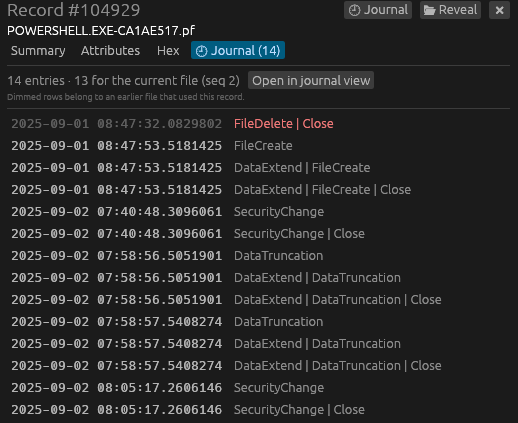
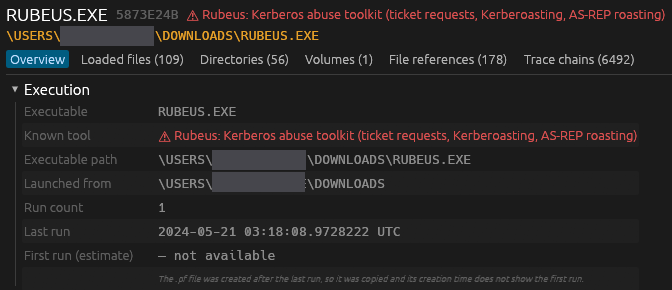
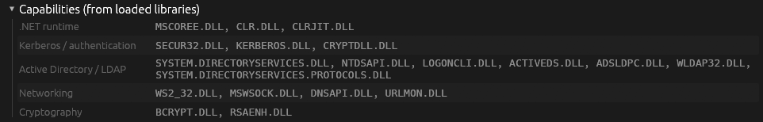

Three artifacts, one timeline of a machine
Drop in a KAPE triage folder, a C:\Windows\Prefetch folder or single files. Sediment recognises each file by its content, so names don't matter.
$MFT
The folder tree rebuilt from parent references, deleted entries, hard links, and every attribute decoded: $SI / $FN timestamps, data runs, ADS and raw hex.
USN journal
$UsnJrnl:$J and $Max as a table and a folder tree with activity and deletion counts, full paths resolved through the $MFT or the journal itself.
Prefetch
Run counts and times, loaded files, directories, volumes and trace chains, from Windows XP to 11, including compressed Windows 10+ files on any OS.
Detections, mapped to ATT&CK
57 built-in rules over all three artifacts, grouped by MITRE tactic and coloured by severity. Pick one to jump to its hits, with what it checks, false positives and references.
Hunting hints
Known attacker tools, capabilities inferred from loaded libraries, files run from user folders, and timestomping flagged where $SI predates $FN.
Extract any file
Small files come straight out of the $MFT. Open the disk image (E01, raw/dd) or live drive and any file comes out, compressed, fragmented or deleted, in a ZIP locked with the password infected.
Local and read-only
Evidence never leaves your machine unless you send it. No telemetry, no account, and evidence files are only ever read.
Hash and pivot
MD5, SHA-1 and SHA-256 of file content stored in the $MFT, with one-click lookups on VirusTotal and Triage using your own API keys.
Stays up to date
Checks for a new version once a day and installs it in one click, verified against its published checksum. You can turn the check off.
Follow the thread between artifacts
Each view links to the others, with Back and Forward across all of them (Alt + ← / → or the mouse side buttons).
- MFT ↔ Journal: every record has a Journal tab, and every journal entry links back to its record, even after the file was deleted and the record reused.
- Prefetch → MFT: each loaded file shows whether it still exists on disk, with one-click jumps to its record and journal history.
- MFT → Prefetch: a record shows which prefetch files loaded it.
- First-run estimate: the creation of the
.pffile in the journal dates the first execution.



See what ran, and what it could do
Prefetch shows a program ran even after it was deleted. Sediment reads every version of the format and points out what deserves a second look.
- Known tools: Rubeus, Mimikatz, PsExec, SharpHound, Rclone and more, each named with what it's used for.
- Capabilities: .NET, Kerberos, LDAP, networking and crypto libraries grouped, so a "notepad" that loads
KERBEROS.DLLstands out. - Notable files: executables in user, temp or download folders, alternate data streams, and files no longer in the
$MFT.
Install with one command
Use the command for your system at the top of the page. No Rust, package manager or administrator rights needed.
Windows 10 and 11
Installs sediment.exe to %LOCALAPPDATA%\Programs\Sediment, adds a Start menu shortcut and puts it on your PATH. x64 and ARM64.
macOS 11 or newer
Installs Sediment.app into Applications. One universal app for Apple Silicon and Intel Macs.
Linux
Installs to ~/.local/bin/sediment with an app-menu entry. x64 and ARM64; needs glibc 2.35 or newer (Ubuntu 22.04, Debian 12, Fedora 36 and later).
gh attestation verify <file> -R Nyanites/sediment. Read the scripts first if you like: install.ps1 · install.sh.Frequently asked questions
Where do I get the $MFT, $J and Prefetch files?
From a live system or disk image with a triage collector such as KAPE, Velociraptor or FTK Imager. The $MFT is at the root of the volume, the journal is the $J stream of $Extend\$UsnJrnl, and Prefetch files are in C:\Windows\Prefetch. Drop the whole collection folder onto Sediment.
Can Sediment extract files?
Yes. Small files, typically under about 700 bytes, and most alternate data streams such as Zone.Identifier are stored inside the $MFT and come straight out of it. Larger files live in clusters on the volume, so open the disk image the $MFT came from (E01, raw/dd or split images) or the live drive, and Sediment reads them from there, including fragmented, sparse, NTFS-compressed and WOF-compressed files. Extracted content is saved in a ZIP with the password infected, the usual convention for possibly malicious samples, so antivirus doesn't quarantine it and nobody opens it by accident.
Is it safe to open files from a compromised machine?
Sediment treats every file as hostile input: parsers are bounds-checked and fuzz-tested, a parser failure shows an error instead of crashing, and nothing in a file is ever executed. Report parsing bugs privately through GitHub security advisories.
Does Sediment send my data anywhere?
Not unless you ask it to. Once a day it asks GitHub whether a new version exists, which sends nothing about you or your files and can be turned off in Help → Settings. Hash lookups and sample submissions to VirusTotal or Triage only happen when you click them, with your own API keys, and every submission asks you first. There is no telemetry and no account.
Can I check a file against VirusTotal or Triage?
Yes: for content stored in the $MFT right away, and for any file once its disk image is open. The record's Content tab shows its MD5, SHA-1 and SHA-256 with copy buttons, opens the VirusTotal or Triage search page in your browser without any key, and with your own API keys looks up the hash or submits the content from inside Sediment. A private Triage instance works too. Remember that VirusTotal shares uploads with its paying customers and public Triage samples are visible to everyone.
Is Sediment free?
Sediment is free for small teams: organizations with fewer than 100 people and under US$1M in revenue, under the PolyForm Small Business License. Larger organizations need a commercial license.
How do I uninstall it?
Windows: delete %LOCALAPPDATA%\Programs\Sediment and the Sediment Start menu shortcut. macOS: drag Sediment from Applications to the Trash. Linux: delete ~/.local/bin/sediment and ~/.local/share/applications/sediment.desktop.
Source-available, free for small teams
Sediment is published under the PolyForm Small Business License 1.0.0. The full source is on GitHub.
Free
For organizations with fewer than 100 people and under US$1M in annual revenue (2019 dollars, inflation-adjusted).
Commercial license
Larger organizations need a commercial license. Get in touch for terms.
Also by Nyanites
Tidewatch: open, search and threat-hunt Windows .evtx event logs natively on macOS.